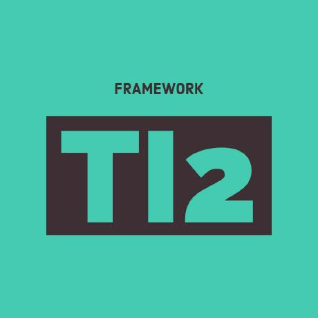
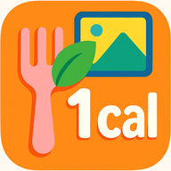

Salvador Aceves — software engineer (JavaScript / Python / DevOps), living nomadic 🌎. Full-time at TourConnect AI, building production AI for travel operations.
LinkedIn · Instagram · YouTube · X · SoundCloud · WakaTime
📍 Now: booking & itinerary automation at TourConnect AI · shipping privacy-first mobile apps on the side
Work — TourConnect AI
AI software for DMCs and tour operators: Itinerary Assist, Booking Automation, Closeouts Automation.
Day-to-day scope
- Backend APIs and integrations for itinerary and booking workflows
- AWS infrastructure and Kubernetes operations for deployment, scaling, and reliability
- Python and Node.js services for automation and data processing
- Frontend product work for end-to-end delivery
More about the company: About TourConnect AI · Resources
Open source — TI2

Apps
Privacy-first personal apps — tap to expand.
Latest — a podcast player that keeps one episode per show: the newest 
- Rebuilds a single newest-first queue whenever feeds refresh — no backlog to manage
- Find shows through Apple Podcasts search or subscribe with a direct RSS feed
- Download the newest unplayed episodes for offline listening and keep playback positions on the device
- Play in the background with lock-screen controls, chapter-aware skipping, playback speed controls, and automatic queue handoff
- Send playback to Google Cast devices and resume on the phone from the same position
 PanoRibbon — one wide photo → seamless carousel or pan video, on-device
PanoRibbon — one wide photo → seamless carousel or pan video, on-device
- Creates 2 to 10 connected portrait slides and silent MP4 videos entirely on your phone
- Reframe each carousel slide independently without breaking the continuous image
- Preview the complete carousel before saving or sharing it
- Keep photos private with on-device image and video processing, no account, and no tracking
Visa Logger — private visa planner & identity wallet
- Visa rules engine: Configure max days per visit, rolling-window allowance, and period-replenish behavior per country
- Visit tracking: Log entry/exit dates, planned trips, and inclusive day counting aligned with visa compliance
- Views: Default travel log, calendar timeline, and day-by-day rolling breakdown validation
- Identity wallet: Store passports, resident cards, and visas with dates, photographs, scans, and supporting files
- Data privacy: Structured records are encrypted locally; attached files stay in the app's private storage
- Backups: Timestamped ZIPs of travel records and documents, with automatic daily/weekly retention pruning

Lazy Calorie Counter — macro tracking straight from your photo library 
Android app that classifies images on-device (offline) to detect food vs non-food, then analyzes food items for full nutrition insights. You do not need to open the app or take pictures inside it; it reads your existing gallery photos automatically.
- Automatically scans your gallery and uses on-device ML to classify food/non-food without internet
- In automatic mode, only food candidates are sent for AI analysis, returning calories plus macros
- Integrates with Health Connect to read activity calories burned and keep nutrition/weight data in sync
- Dynamically adjusts daily calorie budget based on activity, with weight gain/loss projection views
SplitScreenTranslate — live speech transcription + translation, dual-pane
- Captures live speech and displays source + translated streams in split panes
- Supports on-device translation mode and higher-quality cloud translation mode
- Includes downloadable speech models, language selection, and speaker diarization options
- Runs with background service support for ongoing live translation sessions
SaaS
TokenGate — LLM keys, prompts, and quotas in one place 
- Turns versioned prompts into API endpoints while keeping provider credentials, client limits, and usage records together
- Store OpenAI, Anthropic, Gemini, Hugging Face, and OpenRouter keys in an envelope-encrypted organization vault
- Publish immutable prompt versions as text or image endpoints with project-scoped runtime keys
- Track requests, token usage, and estimated model cost by client and model, with monthly quota enforcement
- Manage projects through the web dashboard or a permission-scoped remote MCP endpoint
- Add end-user authorization and Google Play Integrity checks without storing prompt payloads
Music
Guitar on SoundCloud — My Song 8 · My Song 5 · Tart Heart 🎸
Pinned
An executable dependency that would retrieve secrets from AWS…
Tourism Industry Interchange